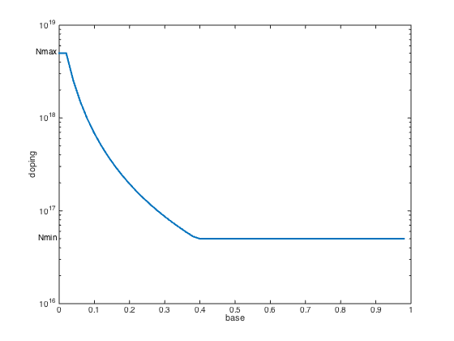

% Boyd, Kim, Vandenberghe, and Hassibi, "A tutorial on geometric programming" % Joshi, Boyd, and Dutton, "Optimal doping profiles via geometric programming" % Written for CVX by Almir Mutapcic 02/08/06 % (a figure is generated) % % Determines the optimal doping profile that minimizes base transit % time in a (homojunction) bipolar junction transistor. % This problem can be posed as a GP: % % minimize tau_B % s.t. Nmin <= v <= Nmax % y_(i+1) + v_i^const1 <= y_i % w_(i+1) + v_i^const2 <= w_i, etc... % % where variables are v_i, y_i, and w_i. % discretization size M = 50; % M = 1000; % takes a few minutes to process constraints % problem constants g1 = 0.42; g2 = 0.69; Nmax = 5*10^18; Nmin = 5*10^16; Nref = 10^17; Dn0 = 20.72; ni0 = 1.4*(10^10); WB = 10^(-5); C = WB^2/((M^2)*(Nref^g1)*Dn0); % exponent powers pwi = g2 -1; pwj = 1+g1-g2; % optimization variables cvx_begin gp variables v(M) y(M) w(M) % objective function is the base transmit time tau_B = C*w(1); minimize( tau_B ) subject to % problem constraints v >= Nmin; v <= Nmax; for i = 1:M-1 if( mod(i,100) == 0 ), fprintf(1,'progress counter: %d\n',i), end; y(i+1) + v(i)^pwj <= y(i); w(i+1) + y(i)*v(i)^pwi <= w(i); end y(M) == v(M)^pwj; w(M) == y(M)*v(M)^pwi; cvx_end % plot the basic optimal doping profile figure, clf nbw = 0:1/M:1-1/M; semilogy(nbw,v,'LineWidth',2); axis([0 1 1e16 1e19]); xlabel('base'); ylabel('doping'); text(0,Nmin,'Nmin ', 'HorizontalAlignment','right'); text(0,Nmax,'Nmax ', 'HorizontalAlignment','right'); disp('Optimal doping profile is plotted.')
Successive approximation method to be employed. For improved efficiency, SDPT3 is solving the dual problem. SDPT3 will be called several times to refine the solution. Original size: 785 variables, 343 equality constraints 196 exponentials add 1568 variables, 980 equality constraints ----------------------------------------------------------------- Cones | Errors | Mov/Act | Centering Exp cone Poly cone | Status --------+---------------------------------+--------- 196/196 | 6.261e+00 2.045e+00 7.021e-11 | Solved 195/196 | 3.102e+00 1.096e+00 0.000e+00 | Solved 190/192 | 7.602e-01 4.952e-02 0.000e+00 | Solved 97/160 | 8.235e-02 5.447e-04 0.000e+00 | Solved 26/ 68 | 6.361e-03 3.211e-06 0.000e+00 | Solved 1/ 7 | 5.910e-04 2.224e-08 0.000e+00 | Solved 0/ 0 | 0.000e+00 0.000e+00 0.000e+00 | Solved ----------------------------------------------------------------- Status: Solved Optimal value (cvx_optval): +1.57873e-12 Optimal doping profile is plotted.
